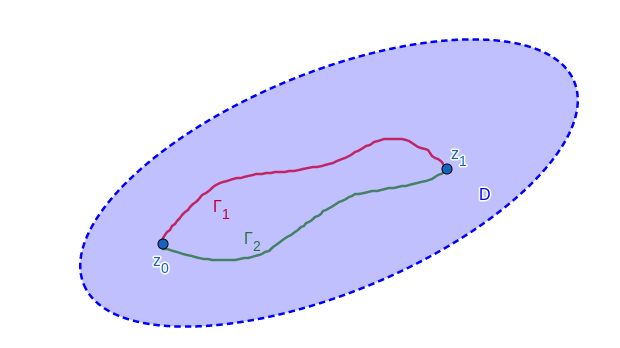
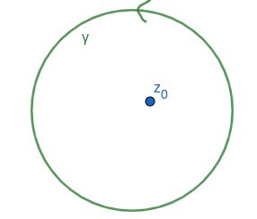

Integración
Dada una función $f:\mathbb{C} \rightarrow \mathbb{C}$ compleja (no necesariamente analítica) y una curva $\Gamma$, definimos su integral de línea como:
$$ \int_{\Gamma} f(z)dz = \int_{t_0}^{t_1}f(\gamma(t)) \gamma '(t) dt $$
Donde $\gamma(t)$ es una parametrización cualquiera de la curva $\Gamma$. Veamos algunas propiedades importantes.
• El resultado no depende de la parametrización (está bien definida).
• Dado un dominio simplemente conexo $D$, dos puntos $z_0$ y $z_1$ de $D$, y dadas dos curvas $\Gamma_1$ y $\Gamma_2$ uniendo ambos puntos, ambas en $D$, si la función $f$ es analítica en $D$, entonces la integral no depende del camino:
$$ \int_{\Gamma_1}f(z) dz = \int_{\Gamma_2}f(z) dz $$

• Si $D$ es un dominio simplemente conexo y $f$ es una función analítica en $D$, entonces la integral sobre cualquier curva cerrada de $D$ es 0:
$$ \oint_{\gamma} f(z)dz = 0 \text{ , } \forall \gamma \subset D$$
• Nota: esto permite definir una primitiva de $f$:
$$ F(z) = \int_{z_0}^z f(w)dw $$
Donde la integral se realiza tomando cualquier curva que una $z_0$ con $z$
Teorema de Cauchy
Si $f$ es una función analítica en un dominio $D$, $\gamma$ es una circunferencia en $D$ orientada de manera antihoraria, y $z_0$ es un punto cualquiera del interior de la circunferencia, entonces:
$$ f(z_0) = \frac{1}{2\pi i}\oint_{\gamma}\frac{f(z)}{z-z_0}dz$$

• Nota: este teorema es un caso particular del teorema de los residuos.
Ceros y singularidades
Una función analítica $f$ tiene un cero de orden m en $z_0$ si:
$$ f(z_0)=...=f^{m-1}(z_0) = 0 \text{ , } f^m(z_0) \neq 0$$
Una función analítica en todos los puntos de un entorno de $z_0$ salvo en $z_0$ se dice que tiene una singularidad aislada en $z_0$. Las singularidades aisladas pueden ser:
• Evitable: Cuando
$$ \exists \lim_{z\rightarrow z_0}f(z) \text{ y es finito}$$
• Polo de orden m: Cuando $(z-z_0)^m f(z)$ es analítica en $z_0$, pero $(z-z_0)^{m-1} f(z)$ no. En ese caso, se cumple que
$$ \exists \lim_{z\rightarrow z_0}f(z) = \infty$$
• Esencial: Cuando
$$ \nexists \lim_{z\rightarrow z_0}f(z)$$